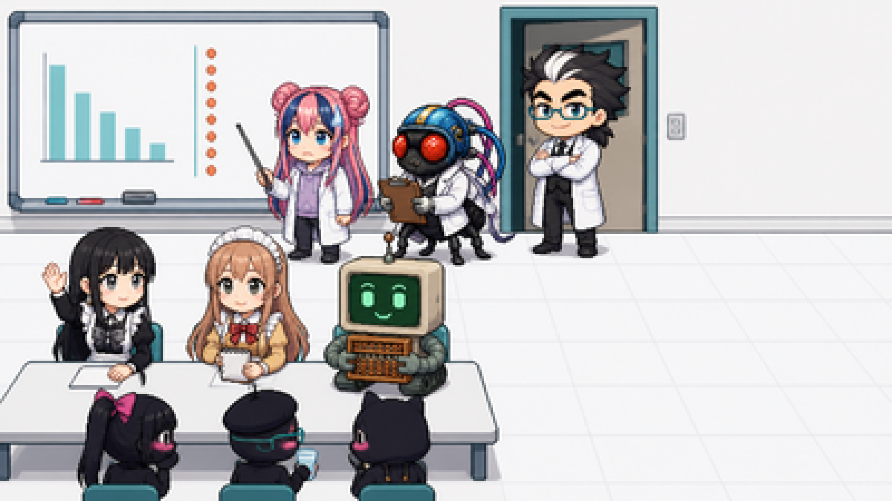

등장인물
 시아인턴 · 직관파. "그림으로 보면요?"
시아인턴 · 직관파. "그림으로 보면요?" 모아인턴 · 꼼꼼파. "그럼 끝까지 맞아요?"
모아인턴 · 꼼꼼파. "그럼 끝까지 맞아요?" 하루조수 · 오늘 첫 브리핑을 맡아 긴장 중
하루조수 · 오늘 첫 브리핑을 맡아 긴장 중 박사박사 · 단계마다 정리
박사박사 · 단계마다 정리 초파리 연구원초파리 연구원 · "이걸 눌러 봐"
초파리 연구원초파리 연구원 · "이걸 눌러 봐" 주판봇주판봇 · 소수 세기 담당, 가끔 성급함
주판봇주판봇 · 소수 세기 담당, 가끔 성급함 X1방청석 · 하루가 걱정됨
X1방청석 · 하루가 걱정됨 X2방청석 · 물 챙겨 주는 담당
X2방청석 · 물 챙겨 주는 담당 X3방청석 · 조용히 응원
X3방청석 · 조용히 응원
연구실 회의실 · 하루의 첫 브리핑2026년 11월, "리만 가설이 증명됐다"는 소식이 연구실에 들어왔습니다. 박사는 조수 하루에게 인턴들 앞에서 브리핑을 맡겼습니다. 하루는 떨리는 목소리로 시작합니다.
브리핑 시작하기 →코드·수식을 몰라도 됩니다. 단계마다 직접 눌러 보는 복습·실험 대시보드가 있습니다.
시아인턴 · 직관파. "그림으로 보면요?"모아인턴 · 꼼꼼파. "그럼 끝까지 맞아요?"하루조수 · 오늘 첫 브리핑을 맡아 긴장 중박사박사 · 단계마다 정리초파리 연구원초파리 연구원 · "이걸 눌러 봐"주판봇주판봇 · 소수 세기 담당, 가끔 성급함X1방청석 · 하루가 걱정됨X2방청석 · 물 챙겨 주는 담당X3방청석 · 조용히 응원앞 단계에서 생긴 궁금증이 다음 단계의 질문이 됩니다.
본문을 읽은 뒤, 또는 읽기 전에 바로 눌러 봐도 됩니다.
1단계 대시보드1~100 체 거르기, 아무 수나 소수 블록으로 쪼개기, 소수 감별 퀴즈 5문제.
2단계 대시보드곱하기 1번 vs 쪼개기 수천 번, 서랍 수를 소수로 바꾸면 고르게 퍼지는지.
3단계 대시보드100에서 100만까지 소수 비율이 줄어드는 곡선, 개수 맞히기 게임.
 4단계 대시보드
4단계 대시보드실제 개수와 두 가지 어림을 한 그래프에. 차이가 몇 %인지 바로.
5단계 대시보드빗나감이 약속한 범위 안에 있는지, 점 하나를 가운데 줄 밖으로 옮기면 어떻게 되는지.
6단계 대시보드개수 범위 계산기, 소수 간격 탐험, 자물쇠용 소수 찾기 계획기.
 대결
대결시아의 간단한 어림 vs 모아의 좋은 어림. 주판봇이 직접 세어 판정.